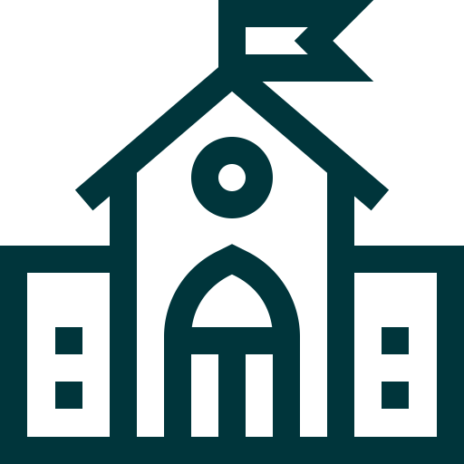
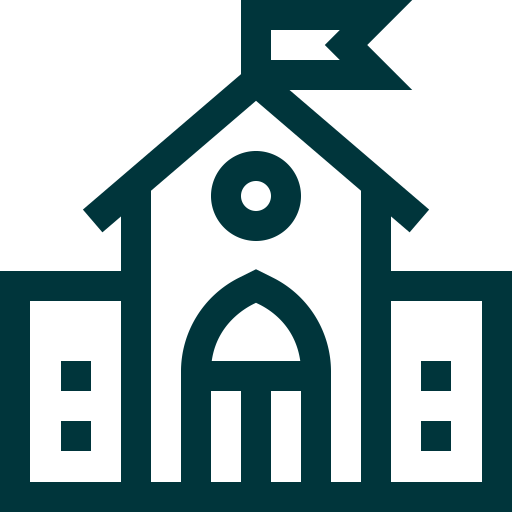

Courses read
| 2nd year Uni student | |
|  | Mittuniversitetet, Sundsvall |
| Webbutveckling 120p | |
| Courses read: |
| 2nd year Uni student | |
|  | Mittuniversitetet, Sundsvall |
| Webbutveckling 120p | |
| Courses read: |
| Independent courses | |
| Uppsala Universitet | |
| Sommarkurs | |
| Courses read: |